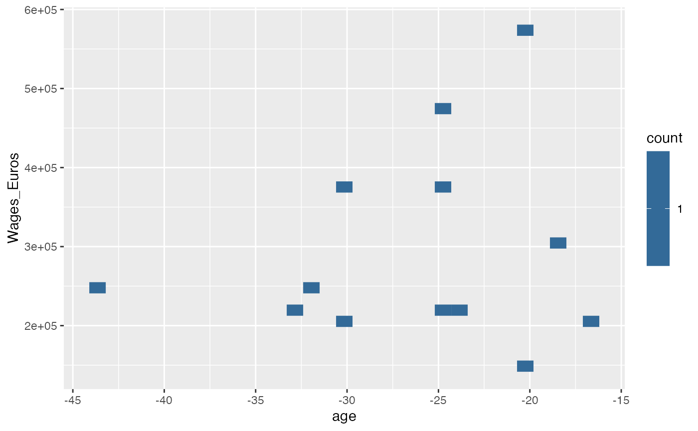
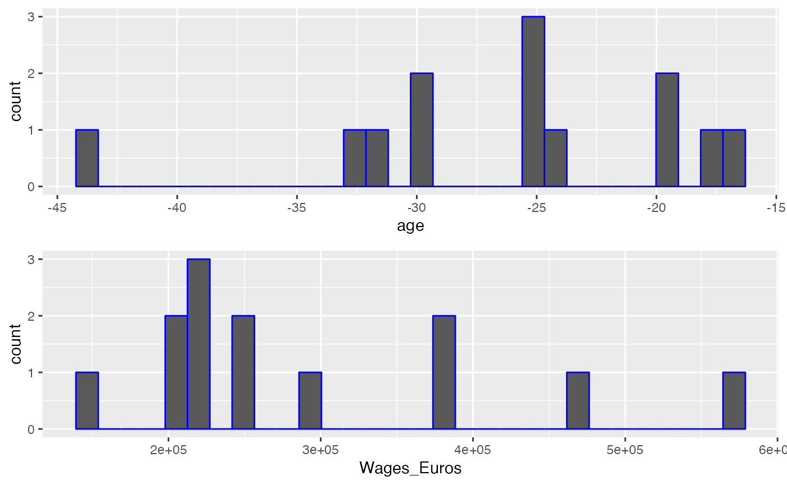
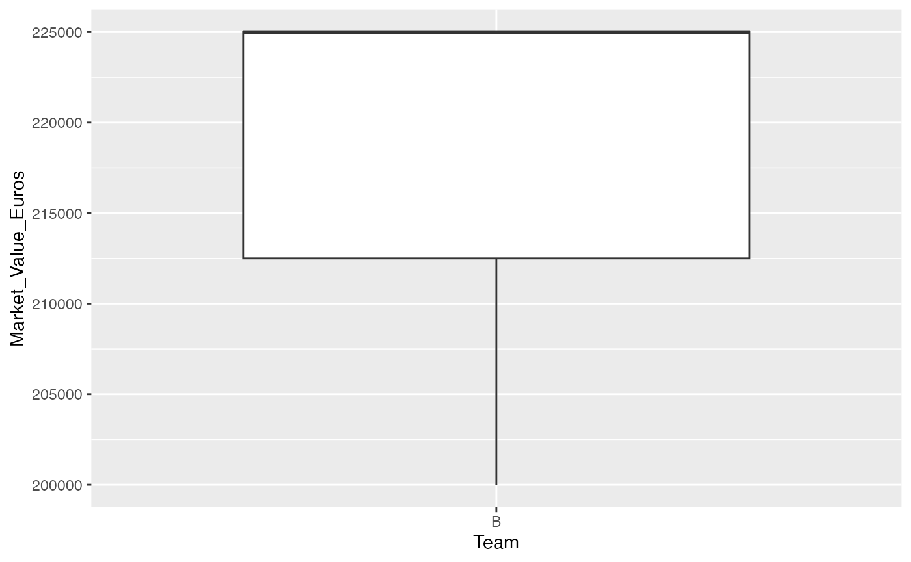

my-vignette.Rmd
library(socceranalysisR)Suppose you have three soccer data set:
small_data_1 <- data.frame(age = - c(18, 20, 20, 25, 25, 24, 25, 30, 33, 32, 44, 30, 17),
Wages_Euros = c(300000, 575000, 150000, 475000,375000, 225000, 225000, 200000, 225000, 250000, 250000, 375000, 200000))
small_data_2 <- data.frame (Name = c("Flora", "Mary", "Sarah", "Ester", "Sophie", "Maria"),
second_column = c(1, 4, 3, 5, 1, 6),
third_column = c(7, 30, 12, 17, 34,8))
small_data_3 <- data.frame(Team= c("A", "B", "B", "B", "C", "C") ,
Market_Value_Euros = c(375000, 225000, 225000, 200000, 225000, 250000),
age = c(18, 20, 20, 25, 25, 24)) soc_viz_stats
You can view any two chosen columns in a binned scatter plots by:
## scatter plots
soc_viz_stats('age', 'Wages_Euros', T , small_data_1)
#> Warning: `label_number_si()` was deprecated in scales 1.2.0.
#> ℹ Please use the `scale_cut` argument of `label_number()` instead.
#> ℹ The deprecated feature was likely used in the socceranalysisR package.
#> Please report the issue to the authors. Or you can view the distribution them as two histograms:
## histograms
soc_viz_stats('age', 'Wages_Euros', FALSE , small_data_1)
#> `stat_bin()` using `bins = 30`. Pick better value with `binwidth`.
#> `stat_bin()` using `bins = 30`. Pick better value with `binwidth`.
soc_get_outliers
You can also get the outliers based on standard deviations methods:
## getting outliers
soc_get_outliers(small_data_1,Wages_Euros,"SD",2)
#> age Wages_Euros
#> 1 -20 575000soc_rankingplayers
You can also rank players by their names based on the second feature by:
# ranking players
rankingplayers(small_data_2, "second_column")
#> Name second_column
#> 1 Maria 6
#> 2 Ester 5
#> 3 Mary 4
#> 4 Sarah 3
#> 5 Flora 1
#> 6 Sophie 1soc_find_team_stat
Finally, you can view a team’s descriptive statistics table and box-plot of selected feature:
# descriptive statistics
soc_find_team_stat(small_data_3, "B", Market_Value_Euros)
#> [[1]]
#> Team Market_Value_Euros age
#> Length:3 Min. :200000 Min. :20.00
#> Class :character 1st Qu.:212500 1st Qu.:20.00
#> Mode :character Median :225000 Median :20.00
#> Mean :216667 Mean :21.67
#> 3rd Qu.:225000 3rd Qu.:22.50
#> Max. :225000 Max. :25.00
#>
#> [[2]]